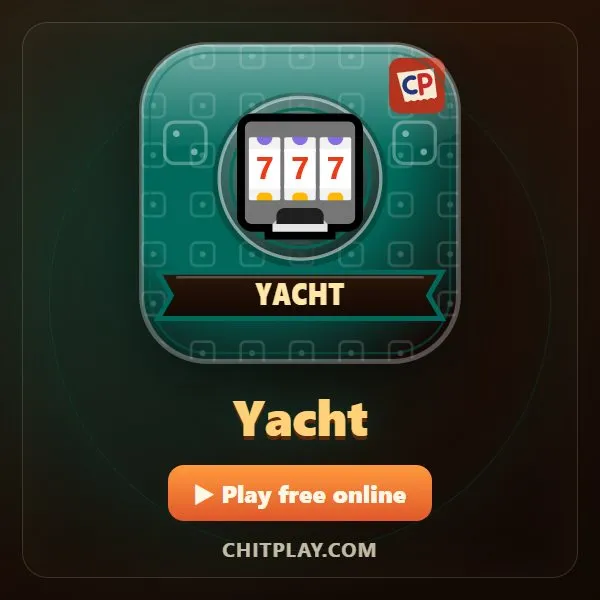
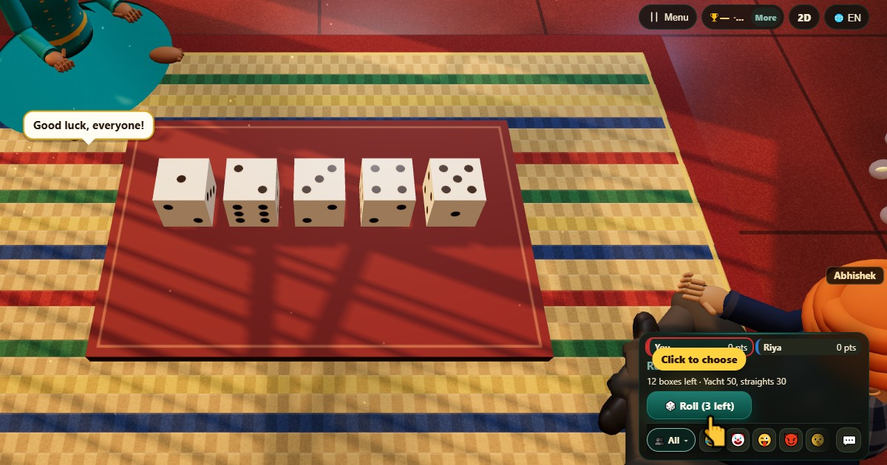
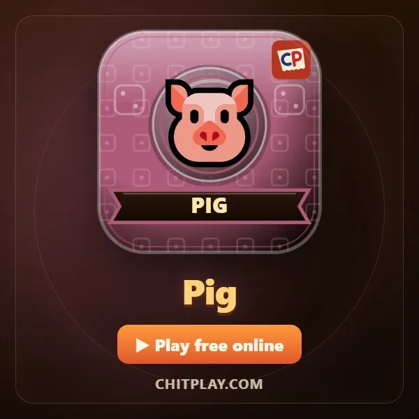

Yacht (dados) (Yacht)
- 👥 2–4 jogadores
- Jogos de dados
- 🆓
Guia em português
Cinco dados, três jogadas, doze categorias. Escolha bem seus pontos.
English name: Yacht

Como jogar
- Jogue os cinco dados. Toque nos que quiser guardar e jogue os outros de novo. Dá para fazer isso até três vezes por vez.
- Depois de qualquer jogada, você pode parar e marcar numa categoria que ainda não usou.
- Uns a Seis marcam a soma daquele número. Escolha marca a soma de todos os dados.
- Quadra marca a soma desses quatro dados. Full house (três de um e dois de outro) marca a soma dos cinco.
- Sequência baixa (1–5) e Sequência alta (2–6) valem 30. Yacht (os cinco iguais) vale 50.
- Se nada encaixar, você ainda precisa escolher uma categoria, mesmo que marque 0.
Pontuação
O seu total é a soma das doze categorias.
Quem ganha
Depois de doze vezes cada um, vence o maior total.
Perguntas frequentes
Yacht é jogo de aposta?
Não. No ChitPlay não há nada para apostar, comprar ou ganhar. Os pontos não valem nada fora do jogo.
Quantas categorias há?
Doze, e você preenche uma a cada vez.
Formas de jogar
- Como convidado: Sem cadastro nem login. Escolha um nome e jogue na hora.
- Contra o computador: Quando não há ninguém, jogadores do computador ocupam os lugares. Fácil, normal ou difícil.
- Online: Sente-se a uma mesa pública com jogadores do mundo todo.
- Com amigos por perto: Crie a partida em um celular e compartilhe o código ou o QR. Os amigos entram pelos próprios celulares.
- Em um só celular: Passem o celular de mão em mão: um aparelho basta para a família toda.
Outros idiomas
- हिन्दी: यॉट (पासा)
- Hinglish: Yacht (dice)
- Español: Yacht (dados)
- Français: Yacht (dés)
- Deutsch: Yacht (Würfel)
- Bahasa Indonesia: Yacht (dadu)
- Türkçe: Yacht (zar)
- Italiano: Yacht (dadi)
- 日本語: ヨット（サイコロ）
- 한국어: 요트 다이스
- 中文: 快艇骰子
- Русский: Яхта (покер на костях)
- اردو: یاٹ (پانسہ)
- नेपाली: याट (पासा)
- বাংলা: ইয়ট (ছক্কা)
- English: Yacht · Regras completas (inglês)
Ideias de jogos
Todos os jogos

Pig (dados) Flying Chit
Flying Chit Tunnel Race
Tunnel Race Turbo Tunnel
Turbo Tunnel Tempo de reação
Tempo de reação Teste de Stroop
Teste de Stroop Memória de números
Memória de números Adivinhe a palavra
Adivinhe a palavra
No ChitPlay não há dinheiro real, apostas nem prêmios. Os pontos não têm valor.